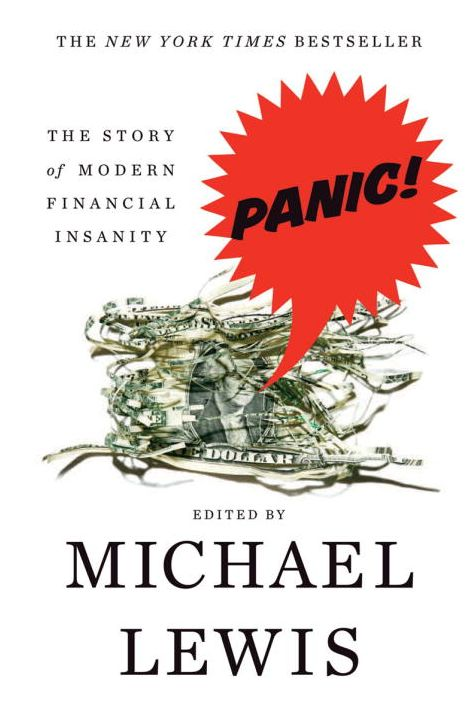

《Panic!》不是迈克尔·刘易斯（Michael Lewis）独自写成的一部金融危机史，而是他编选的报道与评论合集。W. W. Norton于2008年在美国出版，Penguin同年发行英国版；全书收录五十余篇既有文章、报告和书摘，作者包括保罗·克鲁格曼、约瑟夫·斯蒂格利茨、杰弗里·萨克斯以及刘易斯本人。中信出版社2011年出版简体中文版《金融往事：恐慌、危机和迟来的复苏》，ISBN为978-7-5086-1839-5。中文宣传常把刘易斯写成全书作者，准确说法应是编者：他写了导言和连接文字，主要材料来自不同记者、经济学家、监管报告与市场参与者。文本原先散见于《纽约时报》《华尔街日报》《经济学人》等报刊以及若干专著，写作目的和证据标准并不统一，刘易斯的工作是把它们按危机阶段重新编排。初版在2008年金融体系仍动荡时面世，最后一部分因此更接近进行中的记录，而非已经掌握全部损失的复盘。
选文按危机排列。第一部分回到1987年“黑色星期一”，把报纸现场报道、布雷迪委员会报告、《说谎者的扑克牌》书摘和对程序化交易的争论并置；第二部分覆盖1997年亚洲金融危机、1998年俄罗斯违约及长期资本管理公司濒临崩溃；第三部分处理互联网公司上市热潮与泡沫破裂；最后一部分写次级抵押贷款、证券化、评级机构和2007至2008年的信用危机。材料有的写在崩盘之前，有的来自市场最混乱的几天，还有的在事后寻找解释。比如亚洲部分同时放入国际救助的辩护、对资本流动的批评以及刘易斯写长期资本管理公司的文章，不让某一派事后独占解释权。读者因此能看到，同一事件的因果叙述如何随时间改变，也能分辨预测、现场记录与事后归因不是同一种证据。
刘易斯在导言中写道：“Everything, in retrospect, is obvious. But if everything were obvious, authors of histories of financial folly would be rich.”这句话决定了编选方式：书中不寻找一个能解释所有危机的公式，而是保存当时人真正相信过的故事。1987年，人们争论组合保险和电脑交易；亚洲危机期间，争论集中在固定汇率、短期外债与国际援助；互联网泡沫把流量和用户数当成盈利替代物；次贷市场又让住房价格、评级模型和批发融资互相强化。共同点不是简单的“贪婪”，而是价格上涨会改变融资条件、职业激励和对风险的解释。上涨持续越久，贷款人越容易把近期低违约率当成资产本身安全，投资者也越难在职业上承受提前退出的代价，这种机制比“所有人突然失去理智”更具体。
合集的优势也是限制。现场报道保留了不确定性，却可能引用后来被推翻的数字；刘易斯的取舍能形成戏剧节奏，却不是对每场危机的完整学术综述。它尤其适合比较“危机前、危机中、危机后”三种语言：谁把上涨称为新范式，谁在损失出现后更换解释，监管者又在哪些环节才看见风险。还可以为每篇文章标出发表日期、作者身份和当时可获得的数据，检查一个判断究竟领先于市场，还是在结果出现后才显得清楚。若要判断政策效果或损失规模，仍应补读监管报告和后续研究。把这本书当作叙事与激励的原始样本，比把它当作预测下一次崩盘的手册更准确。